Piano di controllo parte 2
Fino ad ora abbiamo visto che i router erano tutti uguali e generici
la realtà però non è questa
- Non si possono salvare tutte le destinazioni nelle tabelle di routing;
- Gli scambi tra le tabelle di routing occuperebbero un tempo enorme intasando la rete;
- Gli algoritmi studiati sono troppo lenti per reti così grandi;
- Internet è una rete di reti;
- Ogni amministratore ISP vuole gestire il routing nella sua parte di rete.
Obiettivo: gestire router sotto la stessa amministrazione
Routing “scalabile”
Presenta il concetto di aggregare router in forme scalabili che si scambiano info tra loro ora parleremo di Sistemi autonomi AS
- insiemi di router che sono nella stessa ISP
- possono essere più di uno
Presentano 2 tipi di instradamento
- intra AS tutti i router usano stesso protocollo
- inter AS routing tra AS diversi, per comunicare ci sono i gateway router che gestiscono quello interno e esterno
esempi di AS interconnessi tra loro
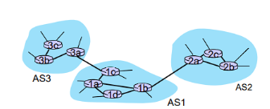 Ci sono 3 AS, ogni AS ha più router.
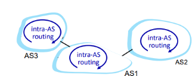 I router dentro un AS comunicano tra solo tramite intra-AS 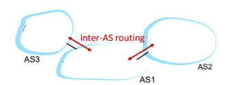 I gateway router sono quelli che collegano i vari AS tra loro (connessioni Inter-AS) 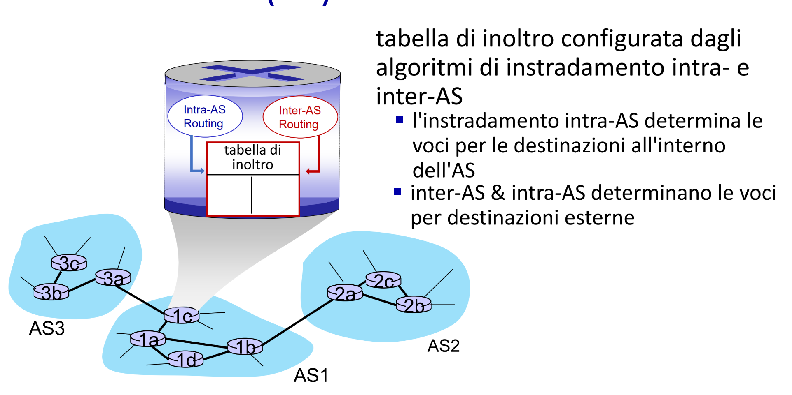
- qui ogni router ha una sua tabella di inoltro riempita utilizzando degli algoritmi che dicono →
- come raggiungere un router in intra-AS
- se vuoi mandare fuori da AS devi usare sia intra-As che inter-As
Esempio
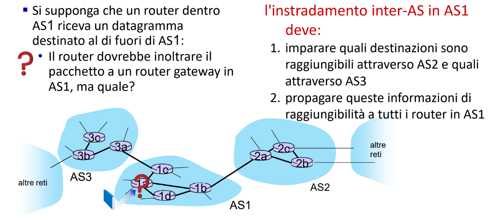
- L’instradamento inter-AS in AS1 deve imparare quali destinazioni sono raggiungibili attraverso AS2 e quali attraverso AS3 e dare queste informazioni a tutti i router in AS1
tipi di protocolli di instradamento intra-AS
- quelli intra sono quelli dentro il sistema
- RIP- routing information protocol
- È di tipo distance vector (DV), i router scambiano tabelle ogni 30 secondi. NON SI USA PIÙ
- EIGRP – Enhanced Interior Gateway Routing Protocol
- Basato su DV, usato nelle reti Cisco
- OSPF – Open Shortest Path First
- Di tipo Link State, ogni router costruisce una mappa della rete e scambia informazioni solo se ci sono modifiche nella rete. Usato nelle reti moderne. Questo protocollo è identico a IS-IS (è una nota nelle slide)
Precisazioni su OSPF
è di tipo link-state
- ogni router invia lo stato dei suoi collegamenti agli altri router in broadcast
- viene chiamato flooding
- usa il protocollo IP e non TCP o UDP
- come criteri per capire se conviene o meno usare un determinato router vengono usate informazioni importanti come la larghezza di banda
- per effettuare i calcoli viene usato l’algoritmo di Dijkstra con tutti i messaggi autenticati per fornire una sicurezza maggiore OSPF è divisa in due livelli
- Area locale: un sottoinsieme della rete
- Backbone: la dorsale che collega tutte le varie aree tra di loro Queste aree OSPF sono comunque tutte intra-AS, ma suddivise internamente in sottosezioni chiamate aree.
- ogni router ha solo conoscenza della sua area e come raggiungere le altre aree, ma senza troppe informazioni 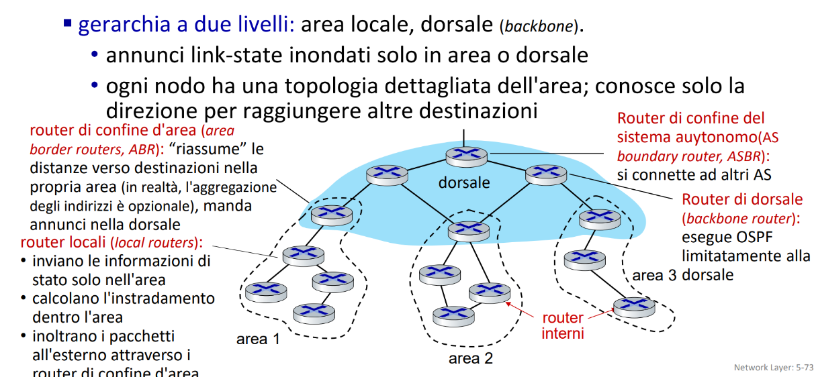 queste aree sono tutte collegate dalla rete dorsale quella in azzurro
come avviene nello specifico l’instradamento inter-AS con BGP
È il protocollo standard per l’instradamento inter-domain, permette ai vari AS di comunicare tra loro (la colla di internet).
- Permette ad un AS di comunicare la sua esistenza e tutte le destinazioni che può raggiungere al resto di Internet.
🔄 Tipi di BGP
| Tipo | Significato | Dove opera | A cosa serve |
|---|---|---|---|
| eBGP | External BGP | Tra AS diversi | Riceve annunci da AS vicini (es: “per andare in rete X, passa da me”) |
| iBGP | Internal BGP | Dentro un AS | Propaga internamente le informazioni ricevute da eBGP |
- Un router di confine riceve annunci BGP da AS esterni tramite eBGP.
- Poi distribuisce l’informazione a tutti gli altri router del suo AS tramite iBGP. 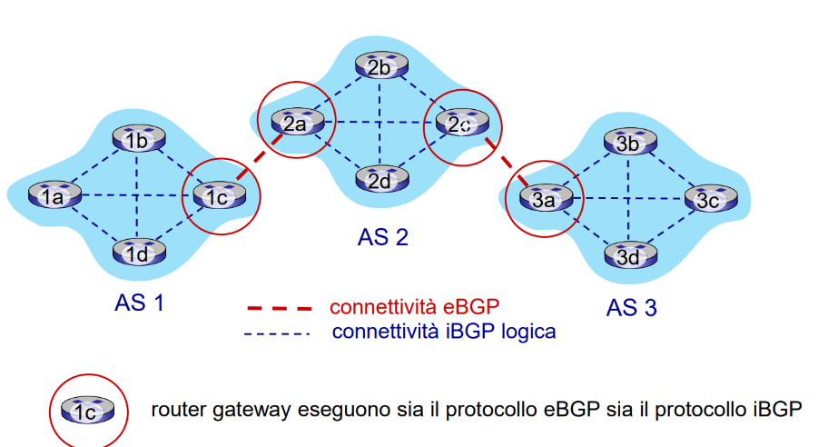
Una sessione BGP È una connessione TCP semi permanente tra due router BGP che sono detti peer questo tipo di sessione rappresenta il vero e proprio scambio di info sui percorsi 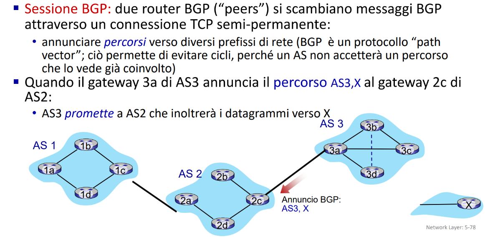 Il path vector è la lista degli AS attraversati per arrivare a una rete
Come sono fatti i messaggi BGP
Sono tutti scambiati tramite connessione TCP tra peer:
- I messaggi servono a stabilire, mantenere e aggiornare la relazione tra peer.
🧾 Tipi di messaggi principali:
| Messaggio | Funzione |
|---|---|
| OPEN | Avvia la connessione tra due peer BGP, include anche dati per l’autenticazione |
| UPDATE | Serve per annunciare nuovi percorsi o ritirare rotte vecchie |
| KEEPALIVE | Mantiene la connessione attiva, anche se non ci sono UPDATE (funziona anche come ACK di OPEN) |
| NOTIFICATION | Segnala errori o anomalie e può chiudere la connessione TCP |
Una rotta BGP è un tipo di informazione inviata da un certo AS che dice:
per raggiungere la rete X passa per questo determinato percorso composto da vari AS
La rotta è composta da: 🔹 1. Prefisso
- Indica la rete di destinazione (es.
10.0.0.0/16) 🔹 2. Attributi - Danno informazioni sul percorso
- I più importanti:
| Attributo | Significato |
|---|---|
| AS-PATH | Elenco degli AS da attraversare per raggiungere il prefisso. Aiuta ad evitare loop. |
| NEXT-HOP | IP del router che conosce il percorso verso il prefisso. È il primo “salto” dell’AS-PATH. |
Non basta comunque il percorso più corto, BGP segue precise regole decise dagli amministratori
Esempio
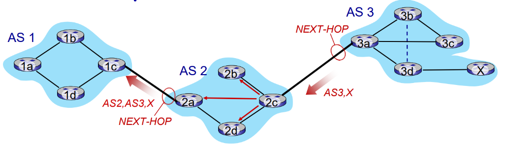 1️⃣ AS3 → AS2 (eBGP)
- Il router 3a in AS3 annuncia al router 2c in AS2 la rotta verso la rete X, usando eBGP.
- Il messaggio contiene:
- Prefisso: rete X
- AS-PATH:
AS3 - NEXT-HOP: IP del router 3a 2️⃣ Dentro AS2: propagazione con iBGP
- Il router 2c accetta il percorso AS3, X (se le politiche di AS2 lo permettono).
- Poi invia lo stesso annuncio tramite iBGP a tutti gli altri router in AS2: 2a, 2b, 2d.
- Il NEXT-HOP rimane 3a (non cambia nei messaggi iBGP). 3️⃣ AS2 → AS1 (eBGP)
- Ora il router 2a (AS2) annuncia al router 1c (AS1) la rotta verso X:
- Il messaggio eBGP dice:
- Prefisso: X
- AS-PATH:
AS2, AS3→ si aggiunge AS2 in testa - NEXT-HOP: IP del router 2a (perché è chi sta facendo l’annuncio)
- Il messaggio eBGP dice:
cosa ricordare di questo esempio
- Il NEXT-HOP cambia solo nei messaggi eBGP (ogni AS annuncia se stesso come nuovo punto di accesso).
- I messaggi iBGP non modificano il NEXT-HOP.
- Gli AS-PATH vengono aggiornati solo nei passaggi tra AS (eBGP).
Esempio con percorsi multipli
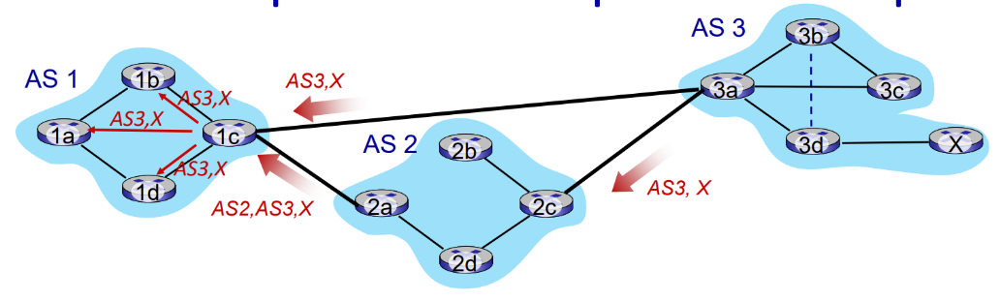 📌 Riepilogo: abbiamo più percorsi e li sceglie secondo le policy
- (tipo preferire meno AS nel cammino o evitare certi AS, costi ecc…)
| Fase | Cosa succede |
|---|---|
| 1️⃣ | 1c riceve due percorsi per la rete X (via 2a e 3a) |
| 2️⃣ | Applica le politiche di selezione BGP |
| 3️⃣ | Sceglie il percorso AS3, X |
| 4️⃣ | Diffonde internamente quel percorso via iBGP |
Esempi di come vengono popolate le tabelle di inoltro
✅ Obiettivo comune I router 1a, 1b e 1d devono sapere come raggiungere la rete X (situata in AS3), usando le informazioni BGP ricevute da 1c, che è il router gateway del loro AS (AS1).
Caso 1 – Next-Hop modificato (next-hop-self)
- Il router 1c modifica il NEXT-HOP e lo imposta su sé stesso quando inoltra l’annuncio BGP agli altri router interni (via iBGP).
- Questo semplifica il routing interno: gli altri router (1a, 1b, 1d) devono solo sapere come raggiungere 1c.
- 🧠 Comportamento attivo di BGP: modifica il NEXT-HOP 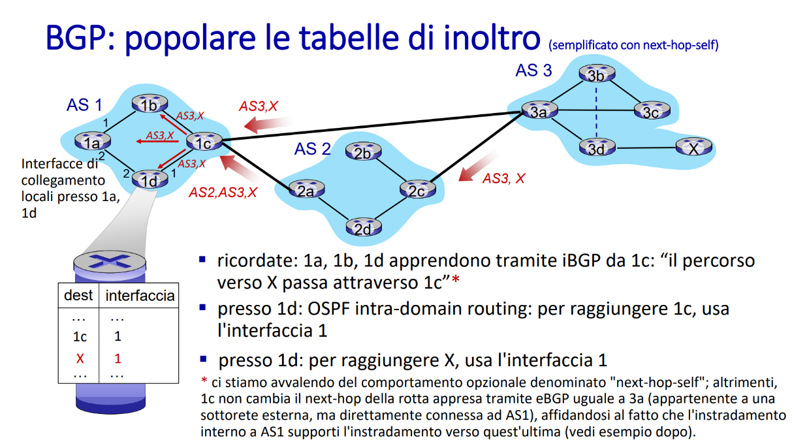
Caso 2 – Next-Hop NON modificato (default)
- Il router 1c NON modifica il NEXT-HOP, quindi lo lascia impostato su 3a (router esterno).
- I router interni devono sapere come raggiungere 3a (indirizzo esterno) → più complesso.
- 🧠 Comportamento passivo di BGP: non tocca il NEXT-HOP 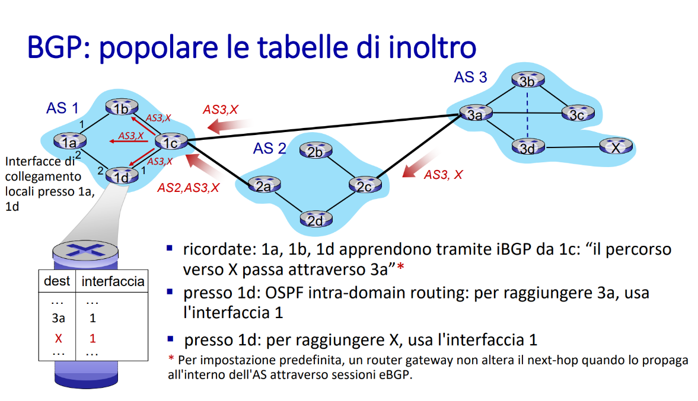
Caso 3 – Dettaglio sul forwarding OSPF
- Stesso comportamento di caso 1 (cioè
next-hop-selfattivo), ma focalizzato sull’effetto pratico:- Mostra come router diversi usano interfacce diverse per arrivare a 1c → e quindi a X.
- Evidenzia il ruolo dell’OSPF intra-AS nel determinare i percorsi effettivi per inoltrare i pacchetti.
- 🧠 Focus sul calcolo della tabella di inoltro (dati forwarding), non su un comportamento diverso di BGP. 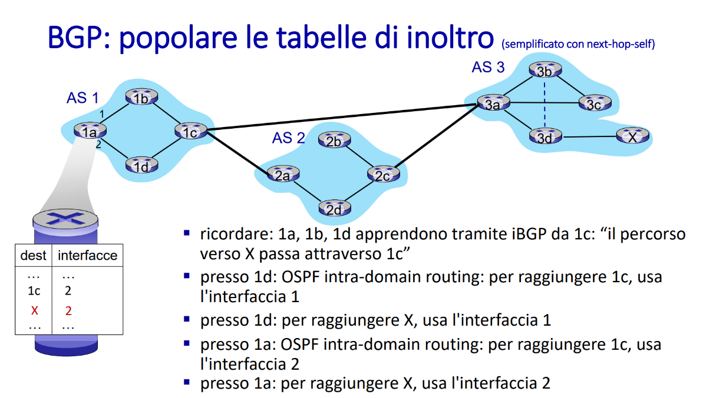
Caso 4 – Instradamento a patata bollente (hot potato routing)
- Quando un AS ha più possibili NEXT-HOP esterni per raggiungere una rete (es. X), e i percorsi sono equivalenti dal punto di vista BGP (AS-PATH ecc.), allora:
- L’instradamento **sceglie il NEXT-HOP con il minimo costo intra-AS.
- Ovvero: “butta fuori il traffico il prima possibile”, senza preoccuparsi del percorso esterno.
Implementare determinate politiche attraverso gli annunci
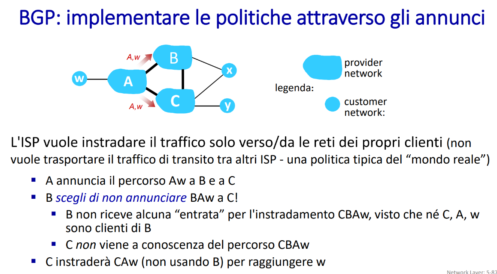
Gli ISP possono voler “forzare” determinati percorsi
- per farlo vengono privati determinati annunci così da evitare instradamenti per determinati AS
- L’AS A annuncia a B e C che può raggiungere Aw (cioè la rete
wdel suo cliente). - Il router B riceve l’annuncio da A, ma decide volontariamente di NON annunciarlo a C.
- È una scelta politica, non tecnica.
altro esempio 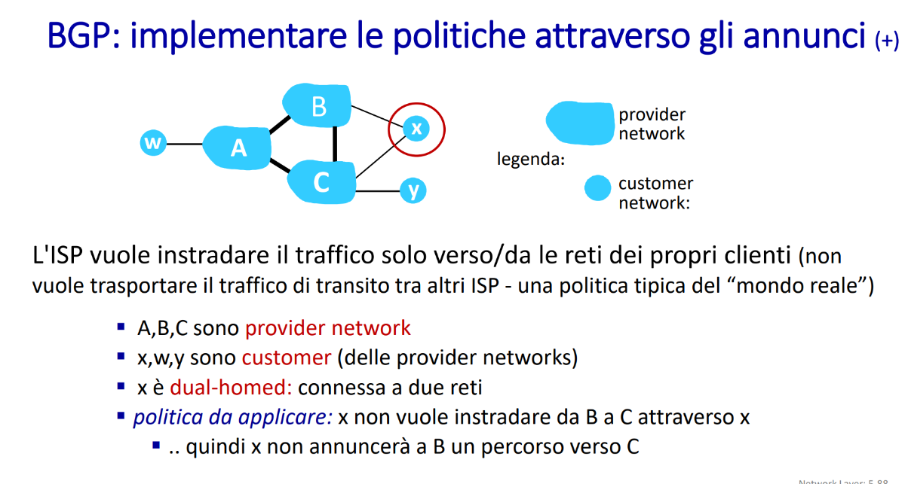
-
x è una rete cliente collegata sia a B che a C (quindi è dual-homed).
-
A, B, C sono provider (reti di ISP).
-
x vuole controllare come viene usata come punto di transito.
-
x riceve da C un annuncio BGP (es. “per raggiungere y passa da C”).
-
x decide di NON annunciare a B questo percorso verso C/y.
-
Risultato: B non sa che può raggiungere y passando da x → C → y.
-
Quindi B non userà x come transito per parlare con C.
conclusione
quali criteri usano i router BGP per scegliere le rotte da seguire?
- Local Preference (Pref Local)
➤ Valore impostato manualmente per definire preferenze politiche.“Preferisco uscire da questa interfaccia per motivi di politica aziendale.”
- AS-PATH più corto
➤ Percorso con meno AS da attraversare.“Meno passaggi, meno complicazioni.”
- NEXT-HOP più vicino
➤ Criterio detto “Hot Potato Routing”:“Uscire il prima possibile dal mio AS, anche se il percorso esterno è peggiore.”
- BGP ID più basso (tie-break)
➤ Se tutto il resto è uguale, si usa l’ID BGP (tipicamente l’indirizzo IP più basso tra i peer). 🔄 📌 Differenze tra intra-AS e inter-AS
| Aspetto | Intra-AS | Inter-AS |
|---|---|---|
| Politiche | Un solo amministratore → decisioni locali | Ogni AS vuole controllo totale sul proprio traffico |
| Scalabilità | Reti gerarchiche (es. OSPF aree) riducono aggiornamenti | BGP non scala per tabelle grandi interne |
| Prestazioni | Ottimizzabili (si può scegliere percorsi più rapidi) | Le performance sono secondarie alle politiche |
IP ANYCAST
Anycast è una tecnica di instradamento IP in cui più server condividono lo stesso indirizzo IP pubblico (es. 8.8.8.8) e:
- il traffico viene inviato automaticamente al server “più vicino” secondo la metrica di routing (es. minor numero di AS da attraversare).
- il client non sa quale server riceverà il traffico: usa semplicemente quell’IP. 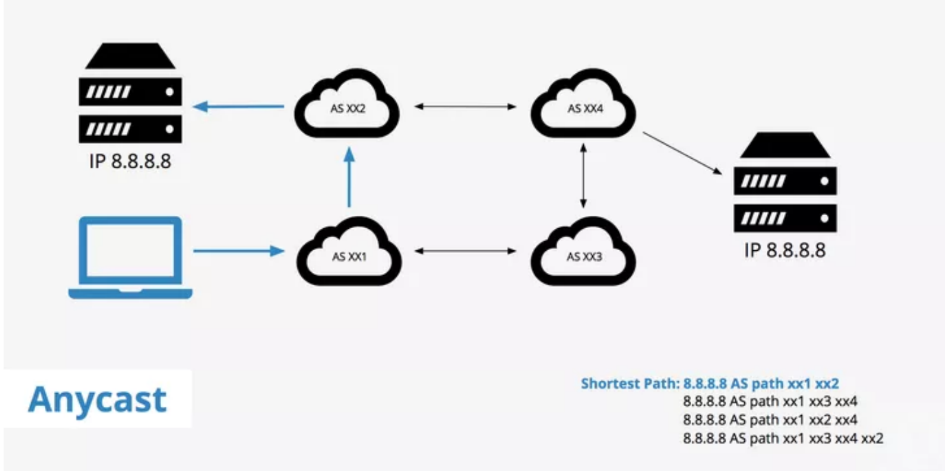
Controllo distribuito prima degli SDN
(Software-Defined-Networking)
- Prima degli SDN avevamo sistemi dove i router erano autonomi
- prendono decisioni per conto proprio
- erano router di tipo monolitico
- hanno tutto proprietario hardware + software per calcolare in autonomia le rotte e gestire tutti i protocolli
- IP, OSPF, BGP
- hanno tutto proprietario hardware + software per calcolare in autonomia le rotte e gestire tutti i protocolli
Dal 2005 si pensa che i router devono essere flessibili e programmabili e che non siano totalmente autonomi
modello classico non SDN
Ogni router ha il proprio algoritmo di instradamento e fa i calcoli in autonomia
- ha anche una tabella di forwarding locale 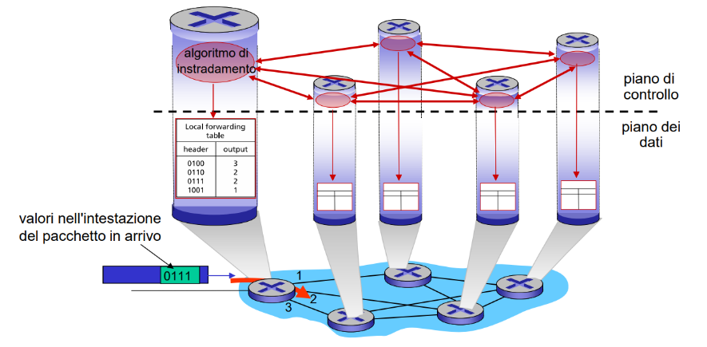
modello con SDN
- I router (o switch) non hanno intelligenza interna: eseguono solo le regole ricevute.
- Il piano di controllo è centralizzato: esiste un controller remoto che:
- mantiene la visione globale della rete
- prende decisioni
- installa direttamente le regole negli switch
- Gli switch guardano i pacchetti e, se non sanno cosa fare, chiedono al controller remoto.
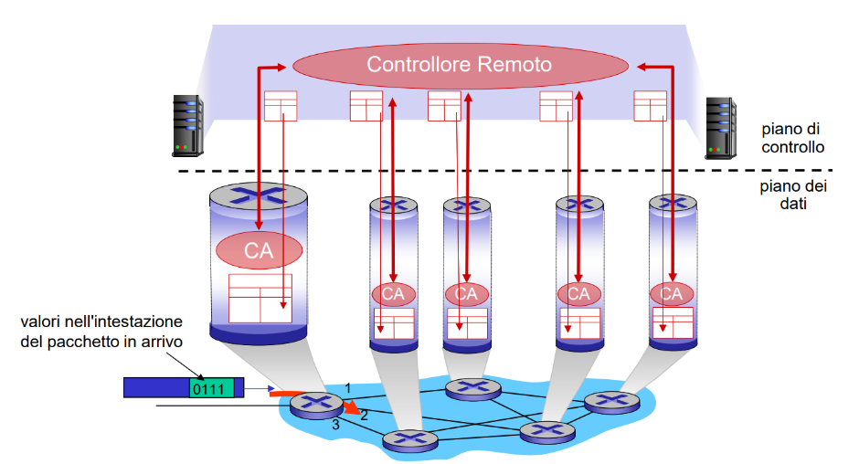
Vantaggi di averlo logicamente centralizzato
Centralizzando il controllo:
- È più facile evitare errori di configurazione.
- Si ottiene maggiore flessibilità nel gestire i flussi (es. per priorità, QoS, sicurezza).
- L’operatore ha una visione globale della rete.
- Centralizzata = più semplice, uniforme, meno errori
- Le reti non sono più chiuse nei sistemi di un singolo produttore
- possono esserci standard più aperti come OPENFlow(vedrai tra poco)
Analogia per spiegare SDN
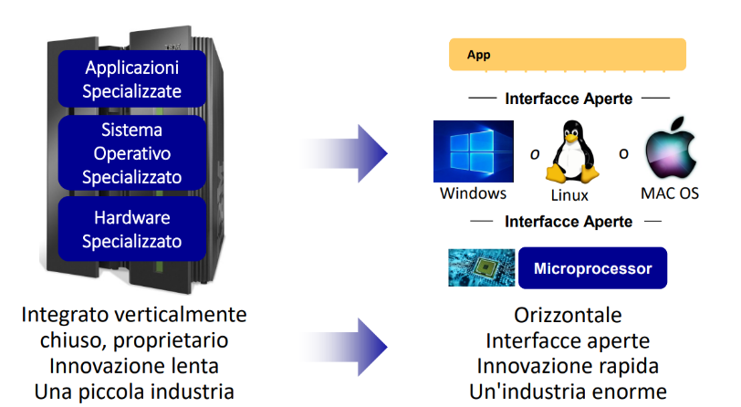
Concetto di ingegneria del traffico
è l’insieme delle tecniche e conoscenze per:
- Ottimizzare le prestazioni della rete
- Misurare, modellare e controllare il flusso del traffico
- Raggiungere obiettivi specifici, come:
- evitare congestioni,
- bilanciare il carico,
- usare al meglio le risorse. Il routing tradizionale è limitato e poco flessibile per ottimizzare il traffico. Con gli SDN è più facile creare tecniche efficaci per gestire il traffico!
Estensione di OSPF
sostanzialmente viene detto che:
- se non lavoriamo con le SDN
- possiamo usare una estensione delle OSPF che aggiungono dettagli per scegliere i percorsi
- Le estensioni permettono a OSPF di annunciare parametri utili alla gestione avanzata del traffico:
- banda disponibile
- ritardo
- jitter
- perdita di pacchetti
- Questi dati aiutano a modellare meglio la rete, ma OSPF da solo non può usarli
- viene usato MPLS-TE
- (Multiprotocol Label Switching – Traffic Engineering)
- permette di indirizzare i flussi correttamente e evitare zone di congestione
- Funziona senza SDN, ma con logica simile ma resta comunque distribuito
Torniamo a parlare di SDN
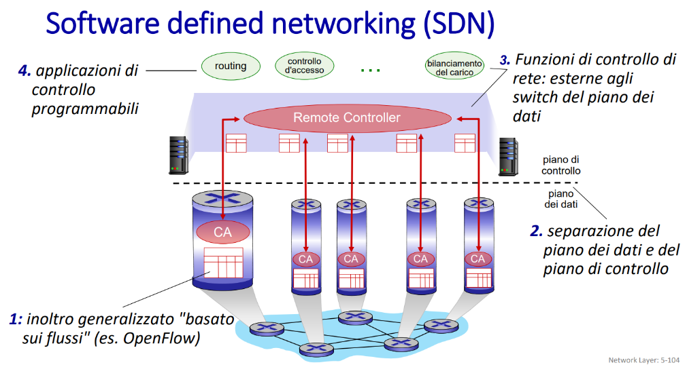 è centralizzato e formato così
- Inoltro generalizzato “basato sui flussi”
- Es. OpenFlow: il controller decide come gestire ogni flusso di pacchetti, non solo in base alla destinazione.
- Separazione tra piano di controllo e piano dei dati
- Gli switch/router si occupano solo di inoltrare.
- Le decisioni vengono prese da un controller centrale.
- Funzioni di controllo esterne
- Routing, access control, bilanciamento del carico… sono gestiti fuori dagli switch.
- Applicazioni programmabili
- Si possono scrivere app che controllano la rete (es. per routing dinamico, sicurezza, ottimizzazione).
Come è suddiviso correttamente SDN
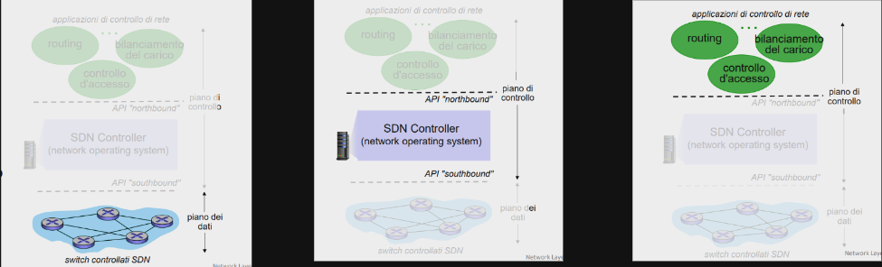
- Nel piano dei dati abbiamo semplicemente gli switch che eseguono ciò che gli viene ordinato dall’alto
- La comunicazione tra controller e switch usa API standard tipo Open Flow
- Poi abbiamo un controller che fa da intermediario e comunica con i due livelli attraverso delle API
- È distribuito, per migliorare le prestazioni, garantire scalabilità e gestire guasti/sicurezza.
- Mantiene lo stato della rete: conosce topologia, traffico, link attivi…
- Poi ci sono le vere e proprie applicazioni che effettuano “i calcoli”
Come è fatto un controller SDN dentro
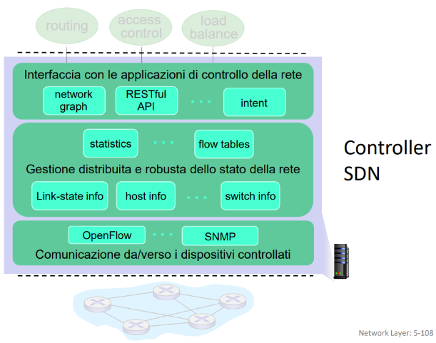
Presenta tre livelli principali
- Livello di interfaccia con le applicazioni
- Fornisce API e astrazioni per le app di rete (routing, access control, ecc…)
- network graph: mappa della rete.
- RESTful API: interfacce web per le app.
- intent: specifica cosa si vuole ottenere, non come.
- Fornisce API e astrazioni per le app di rete (routing, access control, ecc…)
- Gestione dello stato di rete
- Tiene informazioni aggiornate su:
- link (stato, costi),
- host (IP, MAC),
- switch (chi sono, cosa fanno),
- tabelle di flusso (flow tables).
- È un database distribuito per affidabilità e aggiornamenti rapidi.
- Tiene informazioni aggiornate su:
- Comunicazione con i dispositivi che controlla
- Usa protocolli come OpenFlow o SNMP per inviare regole agli switch.
- È la parte che parla direttamente con l’hardware.
Precisazione sul protocollo OpenFlow
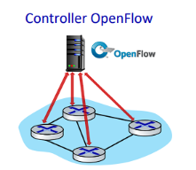 È un protocollo di comunicazione tra controller e switch SDN Usa TCP per inviare i messaggi (opzionalmente cifrati), questi si dividono i 3 categorie:
- Controller-to-switch: es. installa o aggiorna una regola.
- Asynchronous: lo switch avvisa il controller (es. nuovo flusso, errore).
- Symmetric: generici, usati da entrambi (es. keepalive).
Non va confuso con l'API Open Flow perché il protocollo scambia messaggi e l'API definisce le azioni di inoltro programmabili tipo "se vedi pacchetto X mandalo sull'interfaccia Y".
Tipi di messaggi spiegati meglio
🔻 Da Controller a Switch (controller-to-switch)
| Messaggio | Funzione |
|---|---|
| features | Chiede allo switch quali funzionalità/supporti ha |
| configure | Imposta o legge parametri di configurazione dello switch |
| modify-state | Aggiunge, modifica o elimina regole nella tabella di flusso dello switch |
| packet-out | Ordina allo switch di inoltrare un pacchetto specifico su una porta |
🔺 Da Switch a Controller (switch-to-controller)
| Messaggio | Funzione |
|---|---|
| packet-in | Lo switch invia al controller un pacchetto che non sa gestire |
| flow-removed | Avvisa che una regola è stata rimossa dalla tabella di flusso |
| port status | Informa il controller di cambiamenti su una porta (es. guasti, stato) |
interazione completa tra il piano dei dati e il piano di controllo in una rete SDN
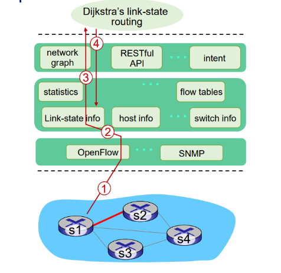 1️⃣ Guasto segnalato (piano dei dati → controller)
- Lo switch S1 rileva un guasto e invia un messaggio
port status(OpenFlow) al controller SDN. 2️⃣ Aggiornamento del controller - Il controller SDN riceve il messaggio e aggiorna lo stato della rete 3️⃣ Attivazione dell’algoritmo di routing
- L’applicazione di routing (es. Dijkstra) viene avvisata perché si era registrata per ricevere eventi di cambiamento di stato dei link. 4️⃣ Ricalcolo dei percorsi
- L’app Dijkstra usa:
- la mappa della rete (network graph)
- le informazioni aggiornate sullo stato dei link
- Calcola nuove rotte per evitare il collegamento guasto. 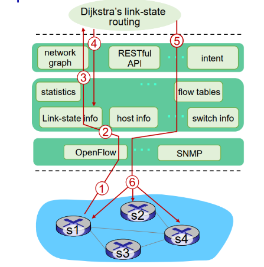 5️⃣ Creazione delle nuove tabelle
- L’applicazione interagisce col modulo flow-table computation del controller per creare le nuove tabelle di inoltro. 6️⃣ Aggiornamento degli switch
- Il controller SDN invia, tramite OpenFlow, le nuove tabelle agli switch che ne hanno bisogno (es. S2, S3…).
Concetto di Intent-Based Networking(IBN)
È un modello in cui l’utente non definisce più “come” gestire la rete, ma cosa vuole ottenere. L’infrastruttura si occupa del “come”. 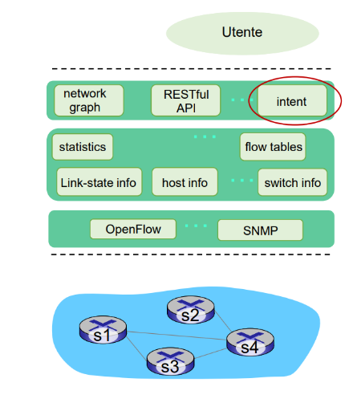 1️⃣ L’utente esprime un intento
- In forma dichiarativa (cioè il risultato desiderato, non il metodo).
- Esempi:
- “Garantire latenza < tra A e B”
- “Isolare il traffico VoIP” 2️⃣ Il controller SDN interpreta l’intento
- Traduce l’obiettivo in azioni concrete:
- Configura switch
- Imposta tabelle di flusso
- Alloca risorse (es. larghezza di banda) 3️⃣ Il controller monitora e adatta
- Controllo continuo:
- Se l’intento non è più rispettato (es. latenza > 5 ms), interviene automaticamente per ripristinare l’obiettivo.
- Usa info da moduli come
statistics,link-state,host info.
SDN: Sfide selezionate
- Robustezza e affidabilità del piano di controllo: deve essere un sistema distribuito dependable (cioè prevedibile, sicuro, scalabile, affidabile).
- Deve resistere ai guasti sfruttando concetti dei sistemi distribuiti.
- La sicurezza e l’affidabilità devono essere integrate fin dall’inizio.
- Reti e protocolli per missioni critiche: SDN deve supportare reti in tempo reale, con alta affidabilità e sicurezza.
- Estensione oltre un singolo AS: le SDN devono evolvere per funzionare su più domini amministrativi.
- Fondamentale per il 5G: SDN è una componente chiave per garantire flessibilità e controllo nelle reti cellulari di nuova generazione.
🔮 SDN e il futuro dei protocolli di rete tradizionali
- Le tabelle di inoltro non devono più essere calcolate localmente dai router, ma possono essere calcolate centralmente dal controller SDN → maggiore coerenza e programmabilità.
- Possibile controllo della congestione centralizzato:
- Il controller può impostare dinamicamente la velocità dei mittenti sulla base dei dati di congestione raccolti dai router.
- Domanda aperta:
Come evolveranno le funzionalità di rete (oggi affidate ai protocolli) quando saranno gestite dalle SDN?
👉 Questo apre la porta a nuove architetture di rete più intelligenti e flessibili.